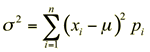

Variance and standard deviation
As in discrete data sets, both the centre of a discrete distribution and its spread are important. As in discrete data sets, spread is measured by the distribution's variance, σ2, and its square root, the standard deviation, σ. These have similar interpretation and properties to the variance and standard deviation of a data set.
The variance of a discrete random variable is defined as:

This is a difficult calculation that you will not be required to make, so you do not need to learn the formula.
Investment fund return
Returns from the investment fund described by the probabilities below were considered on the previous page.
| Return, x | 6 | 4 | 2 | 0 | -2 |
| P(X = x) | 0.05 | 0.20 | 0.40 | 0.20 | 0.15 |
Now consider a second investment fund whose return, Y, has the following probabilities.
| Return, y | 6 | 4 | 2 | 0 | -2 |
| P(Y = y) | 0.05 | 0.10 | 0.50 | 0.30 | 0.05 |
Both of these funds have the same expected return, $1.6 million, so what is the difference between them? The variances for the two funds are shown in the table below.
| Investment fund | Variance | Std devn |
|---|---|---|
| Fund with return X | 4.64 | 2.15 |
| Fund with return Y | 3.04 | 1.74 |
The first investment fund has greater variance than the second, so although there is a greater probability of a high return ($4 million or more), there is also a higher probability of a loss.
The first fund involves a higher risk than the second fund.